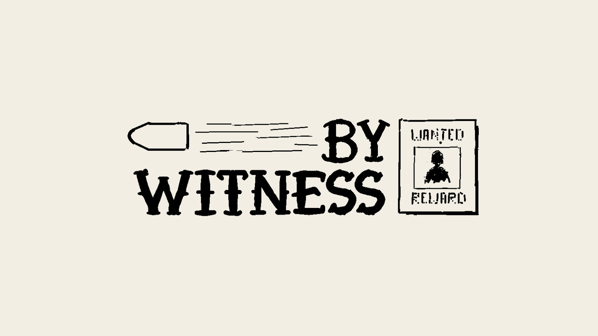
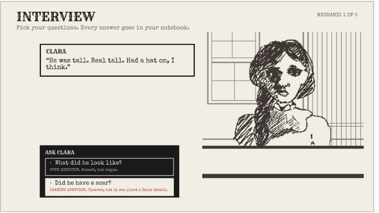
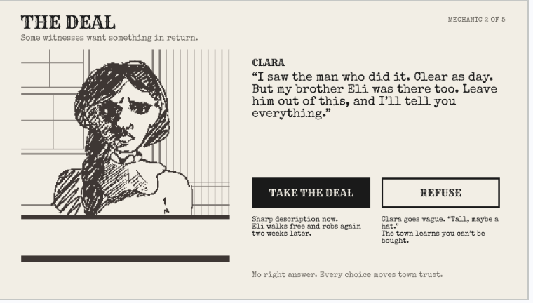
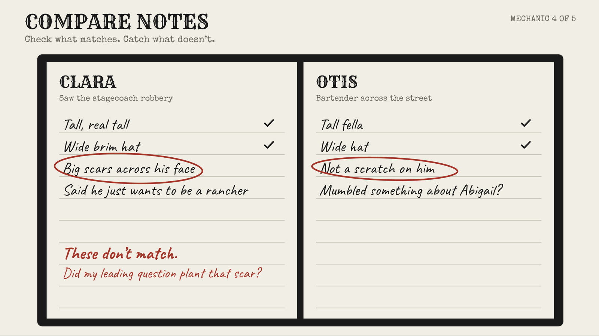
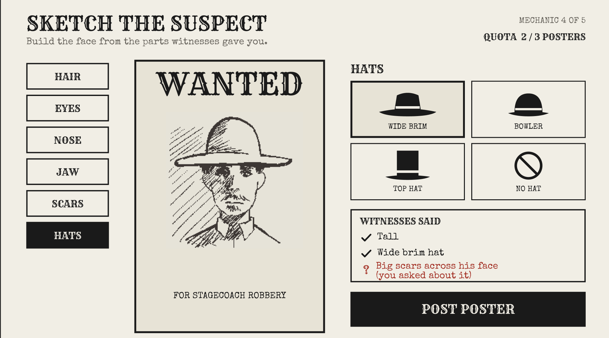
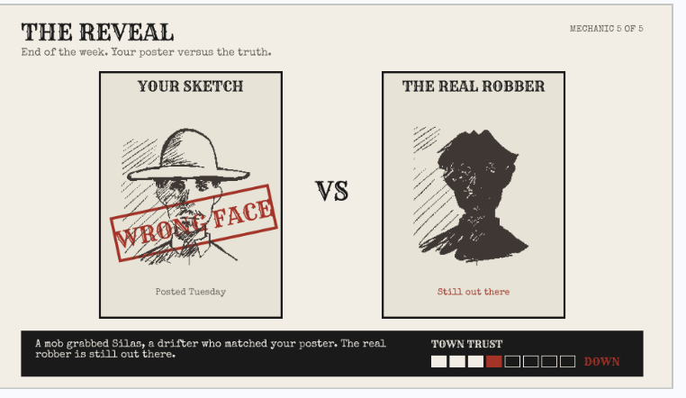

By Witness
A story driven game where you play a sketch artist in a corrupt Old West town. You interview witnesses, draw wanted posters, and live with what happens when you get the face wrong.

- Class
- INFO 498, University of Washington
- Timeline
- 5 weeks, fall 2026
- Team
- Bryant Le, Matthew Nguyen, Kristy
- My role
- Team lead, game designer, all five mechanic screens in Figma
The idea
Most games about crime put you in charge. You catch the bad guy and the story ends. We wanted to flip that. In By Witness, the truth depends on what scared, paid off, or confused people tell you. And the system around you rewards speed over getting it right.
One wrong question can put an innocent man on a poster. A mob acts on it. The real robber walks.
Our goal was simple. We wanted players to leave asking who actually decides what justice looks like, and what it costs to do the right thing when the easy thing pays off right now.
Who it's for
We designed for two kinds of players.
| Player type | What they want | How the game gives it to them |
|---|---|---|
| Explorers | To see every possible outcome | Multiple endings based on your choices, plus story clues about the last sheriff |
| Achievers | To beat the game and feel good about it | Cases that get harder each week, a case record board, and a reveal after every poster |
Both groups get the same message. Explorers find it by trying different paths. Achievers find it by trying to get every case right and realizing the system makes that hard.
Core loop
The game runs on a daily loop inside a weekly loop.
Every day you interview, make choices, and sketch. At the end of the week, all those small choices land at once in the reveal.
Three design decisions
1. Good questions vs fast questions
In interviews, you pick from a list of questions. Open questions like "What did he look like?" get honest but vague answers. Leading questions like "Did he have a scar?" get clearer answers, but they can plant a false detail in the witness's head.
I wanted the fastest option to also be the riskiest one. Real eyewitness memory works this way, and it turns every question into a small choice instead of a menu click. I labeled each question type right on the button and marked leading questions in red so players always see the tradeoff.
2. Bribes vs moral decisions
We split choices into two kinds. Bribes are clearly wrong. Someone offers a shortcut to make you look away. Moral decisions have no right answer. Someone with understandable reasons asks you to bend the rules.
We needed both. If every choice were a bribe, players would refuse everything and feel good about it. Moral decisions make them stop and think. We also made sure refusing a bribe costs something, like a harder interview or a missed quota. Doing the right thing should feel like a real choice, not a free win.
3. A quota that rewards speed over truth
You have to post a set number of posters each week. One in week one, two in week two, three after that. Miss it three times and you get fired.
The key detail is that the quota counts posters, not correct posters. Nobody checks if you drew the right face. The system pushes you to rush, just like real arrest and ticket quotas have. That pressure is what makes bribes tempting.
One case, five screens
I designed five screens to show how one choice ripples through the whole game. Here's a single case, following Clara, a witness to a stagecoach robbery.
1. Interview
Clara says the robber was tall and wore a hat. You can ask an open question or a leading one. You ask if he had a scar. Now she remembers big scars across his face.

2. The deal
Clara offers a sharp description if you leave her brother Eli out of it. Take the deal and you catch the robber fast, but Eli robs again two weeks later. Refuse and Clara goes vague, but the town learns you can't be bought. No right answer. Either way, town trust moves.

3. Compare notes
Your notebook puts Clara next to Otis, the bartender. They agree he was tall and wore a wide hat. But Otis says there wasn't a scratch on him. The notebook flags the conflict and asks the real question. Did your leading question plant that scar?

4. Sketch the suspect
You build the face from parts. The witness panel shows what each person said and flags the scar because you asked about it. You're at 2 of 3 posters for the week. The quota pushes you to post anyway.

5. The reveal
At the end of the week, your sketch sits next to the real robber. Wrong face. A mob grabbed Silas, a drifter who matched your poster. The real robber is still out there, and town trust drops.

That chain is the whole game in miniature. One leading question became a fake scar, then a wrong poster, then an innocent man hurt. I wanted players to trace it back and feel it.
How it changed
- We started with "Likeness," a sketch artist drawing wanted posters. It was a fun mechanic with no message.
- We added a social impact angle. The town is corrupt, and the system rewards speed over truth.
- We renamed it By Witness to put the focus on witnesses and how unreliable memory is.
Playtesting is next. I'm walking classmates through these screens to see where they get stuck, and I'll update this page with what I changed.
What I learned
- Consequences teach better than rules. Telling players leading questions are bad does nothing. Showing them an innocent man on a poster because of their question sticks.
- A choice needs a cost on both sides. If refusing a bribe were free, it wouldn't be a choice.
- The system is the message. The quota says more about justice than any line of dialogue could.
- Leading a team means making calls. I kept us focused on one core mechanic and built everything else around it.